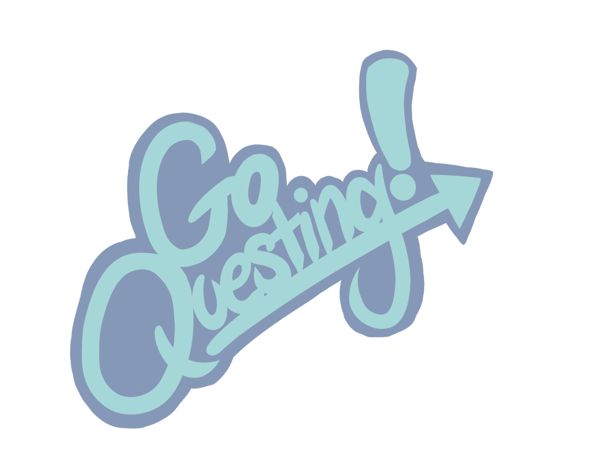
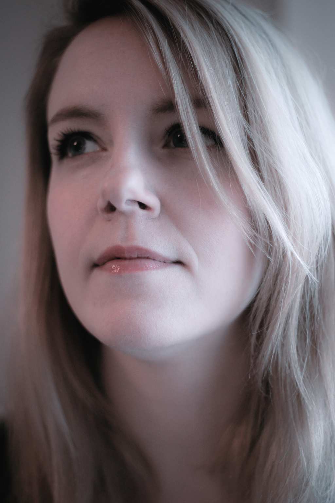

I worked in the project as a producer as well as concept artist, graphics designer, 2D animator and technical artist to a smaller extent."> 
I worked in the project as a game producer, character artist and 2D animator.">
I worked as a writer and background artist in the game.">
About Me
Sade Sirén
CEO of a game company Vainary as well as a Software Developer at Lingsoft Language Services.
At Vainary my resposibilities extend above the managerial tasks of a CEO. I also work as a game producer in out game projects, which span from mobile to PC games. When the projects needs it, I do writing for background story, character development and dialogues as well as work as a concept artist or 2D artist. Because of my engineering degree in Game Technology, I am also familiar with programming games in Unity 3D engine so I have a full view of the game development process. What I love most about game projects though, is completing it with a motivated team. Therefor my job as a producer, keeping the development in schedule, making sure that documentation is orderly and transitions between different tasks are as smooth as possible is what really drives me in the game business.
As a Software developer my main focus is on Node JS applications. With every new project, I want to push myself to learn new methods of making scalable, reliable and modular code. I've worked with websockets and streams and have a drive for test-oriented programming style.
In my spare time - when I have any - I work on my own personal game or writing projects, paint digital art and take photographs as a hobby.
Technical Skills
Game Development
Web Development Backend
Web Design Frontend
Photoshop
Contact Me
Interested in including me in your project? Or want me to produce a game for your gamification or serious game needs?
mail: sade@vainary.fi
tel: +358 505752584